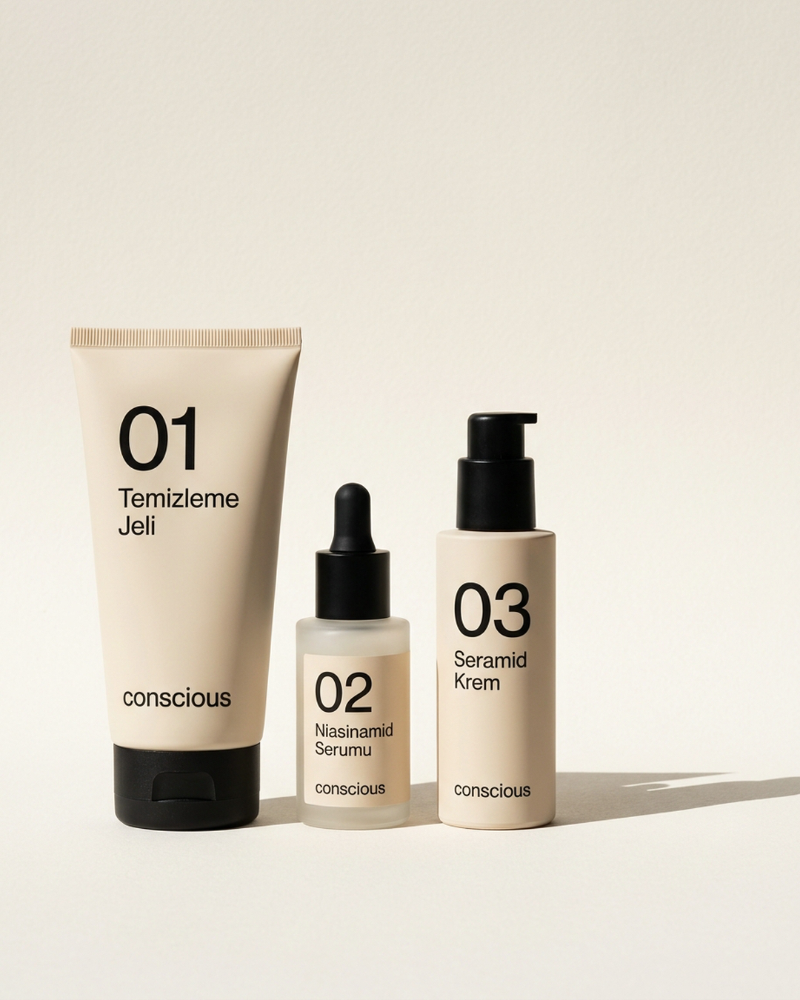

conscious
13 Ekim 2026 · Salı
Conscious
bugün açıldı.
Üç ürün, bir rutin.
Rutin Seti · lansman fiyatı 1.390 TL
Bio'daki bağlantıdan siteye git

Üç ürün, bir rutin.
Rutin Seti · lansman fiyatı 1.390 TL
Bio'daki bağlantıdan siteye git